library(arrow)
library(dplyr)
library(lubridate)
library(zoo)
library(purrr)
library(ggplot2)
library(rstan)Modelo GEV multisite com pooling parcial
1 Introdução
Neste documento descrevemos o conjunto de dados de máximas anuais por duração, os procedimentos de pré-processamento, as análises exploratórias realizadas e a formulação do modelo GEV multisite com pooling parcial utilizado para a regionalização das curvas IDF.
2 Dados e pré-processamento
2.1 Leitura e estrutura dos dados
dados_agregados <- read_parquet("base/gerados/df_imax.parquet")
str(dados_agregados)tibble [71,993 × 8] (S3: tbl_df/tbl/data.frame)
$ gauge_code: chr [1:71993] "420420201A" "420420201A" "420420201A" "420420201A" ...
$ d : num [1:71993] 0.167 0.333 0.5 0.667 0.833 ...
$ imax : num [1:71993] 97.2 68.4 54.4 50.1 47.5 ...
$ date : POSIXct[1:71993], format: "2024-03-08 21:00:00" "2024-02-27 08:00:00" ...
$ year : num [1:71993] 2024 2024 2024 2024 2024 ...
$ na_prct : num [1:71993] 0.506 0.506 0.506 0.506 0.506 ...
$ mon_filter: chr [1:71993] "1:12" "1:12" "1:12" "1:12" ...
$ n_max : int [1:71993] 1 1 1 1 1 1 1 1 1 1 ...d: duração em horas; imax: intensidade em mm/h; date: data do evento máximo year: ano de referência; na_prct: percentual de dados NA
anos_por_estacao <- dados_agregados %>%
filter(!is.na(imax)) %>%
group_by(gauge_code) %>%
summarise(n_anos = n_distinct(year), .groups = "drop") %>%
arrange(desc(n_anos))
print(anos_por_estacao)# A tibble: 383 × 2
gauge_code n_anos
<chr> <int>
1 A805 23
2 A802 21
3 A803 21
4 SBPA 21
5 A804 20
6 A801 19
7 A809 18
8 A812 18
9 A813 18
10 A826 18
# ℹ 373 more rowsggplot(anos_por_estacao, aes(x = n_anos)) +
geom_histogram(bins = 20) +
scale_x_continuous(
breaks = seq(min(anos_por_estacao$n_anos, na.rm = TRUE),
max(anos_por_estacao$n_anos, na.rm = TRUE),
by = 1)
) +
labs(
x = "Número de anos com máximas anuais",
y = "Número de estações",
title = "Comprimento da série por estação"
) +
theme_minimal()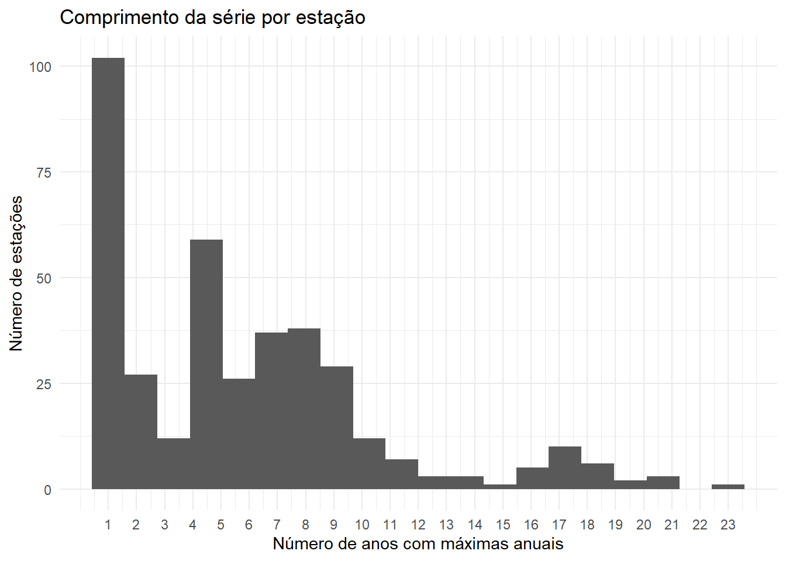
Adotou-se um mínimo de 7 anos de dados por estação, para garantir (i) um número mínimo de observações para a estimação da GEV em cada posto e (ii) um número suficientemente grande de estações na amostra, evitando ao mesmo tempo um custo computacional excessivo no ajuste do modelo hierárquico multisite.
estacoes_validas <- anos_por_estacao %>%
filter(n_anos >= 7) %>%
pull(gauge_code)
# Estações usadas no ajuste do modelo Bayesiano (fit antigo); fixadas aqui para manter consistência após atualização do arquivo de entrada.
estacoes <- c(
"430060402A","430120601A","430235201A","430300402A","430300403A","430350901A","430420002A",
"430450701A","430450704A","430460601A","430460603A","430510801A","430510802A","430620501A",
"430693201A","430700502A","430920901A","431020703A","431177501A","431320101A","431410001A",
"431410002A","431410003A","431440703A","431490202A","431490204A","431490221A","431540401A",
"431690707A","431720202A","431800201A","432000803A","432000805A","432040401A","432130301A",
"432145101A","432250903A","432250904A","432260802A","432300204A","70600000","86100600",
"87380000","88260000","A801","A802","A803","A804","A805",
"A808","A809","A811","A812","A813","A815","A826",
"A827","A828","A829","A831","A832","A833","A834",
"A836","A837","A838","A839","A840","A844","A852",
"A853","A854","A856","A879","A880","A883","A884",
"A894","SBPA"
)
estacoes_validas <- estacoes
max_anuais_filtrado <- dados_agregados %>%
filter(gauge_code %in% estacoes_validas)2.2 Remoção de dados faltantes
Em cada combinação estação–ano, calculou-se a proporção de dados faltantes de imax e foram removidos os anos com mais de 80% de NA (prop_na > 0,8). Dessa forma, apenas anos com cobertura mínima razoável são utilizados na estimação das distribuições extremas, resultando na exclusão de r n_anos_removidos anos-estação.
max_anuais_filtrado2 <- max_anuais_filtrado %>%
group_by(gauge_code, year) %>%
mutate(prop_na = mean(is.na(imax))) %>%
ungroup() %>%
filter(prop_na <= 0.8) %>%
select(-prop_na)
na_por_ano_estacao <- max_anuais_filtrado %>%
group_by(gauge_code, year) %>%
summarise(prop_na = mean(is.na(imax)), .groups = "drop")
anos_removidos <- max_anuais_filtrado %>%
group_by(gauge_code, year) %>%
summarise(prop_na = mean(is.na(imax)), .groups = "drop") %>%
filter(prop_na > 0.8)
n_anos_removidos <- nrow(anos_removidos)
n_anos_removidos[1] 0ggplot(na_por_ano_estacao, aes(x = year, y = gauge_code, fill = prop_na)) +
geom_tile() +
scale_fill_viridis_c(name = "Proporção de NA") +
labs(x = "Ano", y = "Estação",
title = "Padrão temporal de dados faltantes") +
theme_minimal()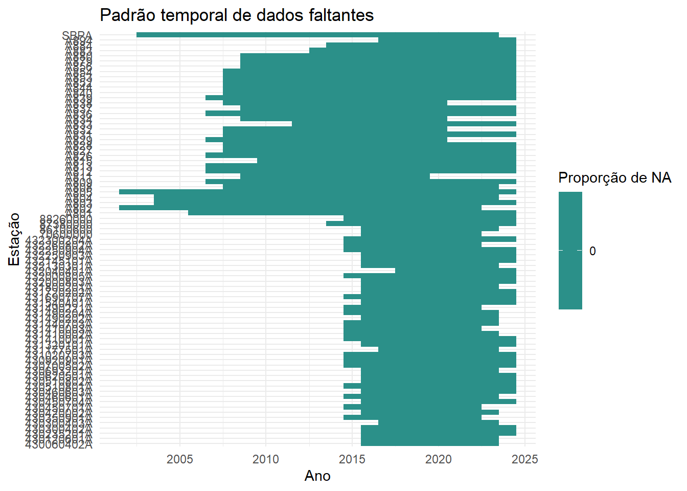
dados_modelo <- max_anuais_filtrado %>%
filter(!is.na(imax)) %>%
arrange(gauge_code, year, d)
dados_modelo <- dados_modelo %>%
filter(d >= 1 & d <=24)
dados_modelo <- dados_modelo[-which(dados_modelo$imax==0),]No total, foram identificados n_anos_removidos foram removidos por apresentarem mais de 80% de valores ausentes.
2.2.1 Estatísticas descritivas por duração
summary_dur <- dados_modelo %>%
filter(!is.na(imax)) %>%
group_by(d) %>%
summarise(
mediana = median(imax),
q90 = quantile(imax, 0.9),
n = n(),
.groups = "drop"
)
ggplot(summary_dur, aes(x = d)) +
geom_line(aes(y = mediana)) +
geom_point(aes(y = mediana)) +
geom_line(aes(y = q90), linetype = 2) +
labs(x = "Duração (h)", y = "Intensidade (mm)",
title = "Mediana e 90º percentil das máximas por duração") +
theme_minimal()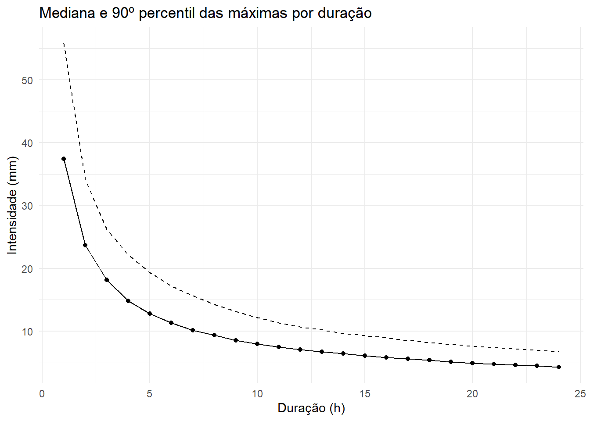
A Figura apresenta a variação da intensidade das máximas de precipitação em função da duração, representada pela mediana (linha contínua) e pelo 90º percentil (linha tracejada) agregados sobre todas as estações. Observa-se o comportamento típico de curvas IDF: as intensidades máximas decrescem de forma monotonicamente rápida à medida que a duração aumenta, com valores em torno de 35–40 mm para a duração de 1 h e inferiores a 10 mm para durações próximas de 24 h. Essa queda acentuada indica que os eventos mais intensos tendem a concentrar-se em janelas temporais curtas, coerente com a predominância de convecção na gênese das chuvas extremas de pequena duração.
A distância entre as duas curvas também é informativa. Para durações curtas (1–3 h), o 90º percentil é bem superior à mediana, refletindo grande assimetria e variabilidade interanual nas máximas de alta resolução temporal. À medida que a duração aumenta, essa diferença se reduz, sugerindo que a agregação temporal “suaviza” os extremos, tornando a distribuição das máximas de longa duração relativamente menos dispersa. Em conjunto, esses resultados reforçam a hipótese de uma relação de escala bem comportada entre intensidade e duração, o que motiva o uso de modelos regionais com estrutura de invariância de escala (via parâmetros \(H\) e \(θ\)) para descrever as curvas IDF no modelo hierárquico.
sd_global <- sd(log(dados_modelo$imax), na.rm = TRUE)
sd_between_gauge <- dados_modelo %>%
group_by(gauge_code) %>%
summarise(mu_est = mean(log(imax), na.rm = TRUE), .groups = "drop") %>%
summarise(sd = sd(mu_est, na.rm = TRUE)) %>%
pull(sd)
cat("Desvio-padrão global (log imax):", sd_global, "\n")Desvio-padrão global (log imax): 1.029226 cat("Desvio-padrão entre estações:", sd_between_gauge, "\n")Desvio-padrão entre estações: 0.2498216 mu_por_estacao <- dados_modelo %>%
group_by(gauge_code) %>%
summarise(mu_log = mean(log(imax), na.rm = TRUE), .groups = "drop")
ggplot(mu_por_estacao, aes(x = mu_log)) +
geom_histogram(bins = 30) +
labs(x = "Média de log(imax) por estação",
y = "Frequência",
title = "Variação espacial das intensidades extremas") +
theme_minimal()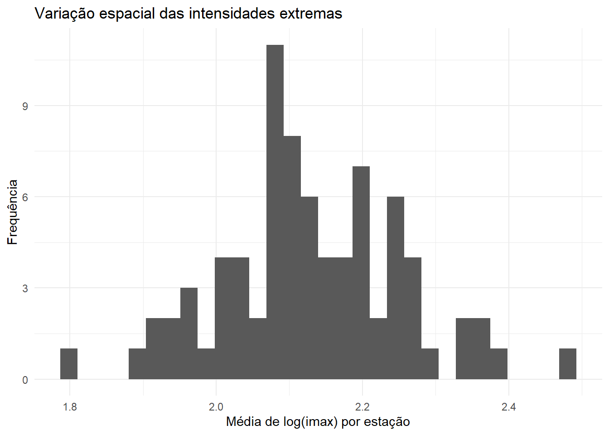
A Figura mostra a distribuição da média de log(imax) por estação. O desvio-padrão global de log(imax), calculado a partir de todas as observações agregadas, é igual a 0,62. Já o desvio-padrão entre estações, obtido a partir das médias de log(imax) por posto, é de aproximadamente 0,12. Isso significa que apenas cerca de 20% da variabilidade total está associada a diferenças sistemáticas entre estações, enquanto a maior parte decorre da variabilidade interna a cada posto (variabilidade interanual e entre durações).
Em termos práticos, esses resultados indicam que as estações não são completamente homogêneas, existe um gradiente espacial de intensidades extremas, como sugerido pelo espalhamento do histograma, mas também não são tão distintas a ponto de justificar ajustes totalmente independentes (non-pooling). Essa combinação de heterogeneidade moderada e forte componente comum é justamente o cenário em que modelos hierárquicos com partial pooling são mais adequados: as estações “compartilham informação” por meio dos hiperparâmetros regionais, mas preservam diferenças locais nos parâmetros da GEV. Isso ajuda a estabilizar as estimativas em postos com poucas observações, evitando o superajuste, ao mesmo tempo em que mantém a capacidade de representar padrões espaciais reais nas intensidades extremas.
##Ajustes GEV ordinários por duração
safe_fgev <- safely(function(x) {
suppressWarnings(evd::fgev(x, std.err = FALSE))
})
fit_gev_by_duration <- function(df_station) {
df_station %>%
filter(!is.na(imax)) %>%
group_by(d) %>%
summarise(vals = list(imax), .groups = "drop") %>%
filter(lengths(vals) >= 3) %>%
mutate(
fit_res = map(vals, safe_fgev),
fit = map(fit_res, "result"),
mu = map_dbl(fit, ~ if (is.null(.x)) NA_real_ else .x$estimate["loc"]),
sigma = map_dbl(fit, ~ if (is.null(.x)) NA_real_ else .x$estimate["scale"]),
xi = map_dbl(fit, ~ if (is.null(.x)) NA_real_ else .x$estimate["shape"])
) %>%
select(d, mu, sigma, xi)
}
ajustes_por_estacao <- dados_modelo %>%
group_split(gauge_code) %>%
set_names(map_chr(., ~ unique(.x$gauge_code))) %>%
map(fit_gev_by_duration)
ajustes_df <- bind_rows(ajustes_por_estacao, .id = "station")
y_lim <- range(ajustes_df$mu, na.rm = TRUE)
ggplot(ajustes_df, aes(x = log(d), y = mu)) +
geom_line(aes(group = station), alpha = 0.5) +
geom_point(aes(color = station)) +
coord_cartesian(ylim = y_lim) +
facet_wrap(~ station) +
labs(x = "log(Duração) (h)",
y = expression(mu[d]),
title = "Estimativas locais de μ[d] por duração") +
theme_minimal() +
theme(legend.position = "none")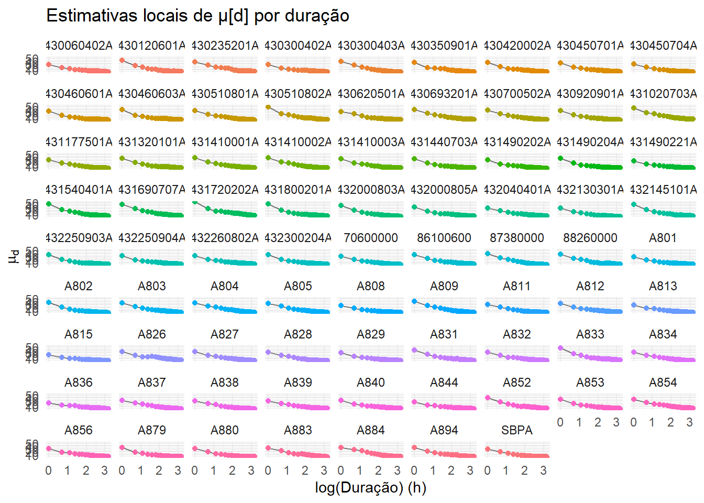
As estimativas locais de \(\mu_d\) por duração (Figura acima) exibem um comportamento bem estruturado para a maioria das estações quando representadas em função de \(log \mu_d\). Para cada estação, os valores de \(\mu_d\) formam uma curva suave e monotonicamente decrescente, e as diferentes estações apresentam formas semelhantes, diferindo principalmente no nível médio e na taxa de decaimento com a duração. Esse padrão indica que a dependência entre intensidade e duração não é arbitrária, mas pode ser descrita de maneira parsimoniosa por meio de uma relação de escala.
Essa evidência empírica motiva o uso, no modelo hierárquico, de uma formulação paramétrica em que \(log \mu_d\) são modelados como funções lineares de uma transformação logarítmica da duração:
\[ \mu_d=\mu_{d_0}\Big(\tfrac{d+\theta}{d_0+\theta}\Big)^{-\eta},\qquad \sigma_d=\sigma_{d_0}\Big(\tfrac{d+\theta}{d_0+\theta}\Big)^{-\eta},\qquad \xi_d=\xi_{d_0}, \tag{1}\]
controlam o nível das curvas em uma duração de referência \(d_0\), \(\eta\) atua como expoente de escala (inclinação na escala log–duração) e \(\theta\) introduz um deslocamento em duração que evita comportamentos espúrios em durações muito curtas. Dessa forma, o modelo aproveita a regularidade observada nas estimativas locais para impor uma estrutura física e estatisticamente coerente às curvas IDF, reduzindo o número de parâmetros livres e facilitando o pooling de informação entre durações e entre estações.
3 Modelo GEV multisite com pooling parcial
As máximas anuais de precipitação para cada duração são modeladas por uma distribuição de valores extremos generalizada (GEV), com parâmetros de localização (), escala (> 0) e forma (). Para (), a função densidade é dada por
\[ f(x \mid \mu,\sigma,\xi) = \exp\left\{ -\left[1+\xi\frac{(x-\mu)}{\sigma}\right]^{-1/\xi} \right\}, \]
No caso limite \((\xi \to 0)\) obtém-se a distribuição de Gumbel, implementada no modelo por meio da forma log-verossimilhança.
3.0.1 Estrutura hierárquica por estação e duração
Seja \((g = 1,\dots,G)\) o índice de estação e \((d = 1,\dots,D)\) o índice de duração (em horas), associado a uma duração \((D_d)\). Para cada observação \((x_{i})\) pertencente à estação \((g)\) e duração \((d)\), assume-se
\[ d_i \mid \mu_{d,g}, \sigma_{d,g}, \xi_{d,g} \sim \text{GEV}\big(\mu_{d,g}, \sigma_{d,g}, \xi_{d,g}\big). \]
Os parâmetros são modelados na escala log para \((\mu)\) e \((\sigma)\), e assume-se uma relação de escala paramétrica entre intensidade e duração. Para cada estação \((g)\) e duração \((D_d)\), temos
\[ \begin{gather} \log\mu_d\sim \mathcal{N}\!\Big(\alpha- \eta\log\tfrac{d+\theta}{24+\theta},\,\tau_\mu^2\Big)\\ \log\sigma_d\sim \mathcal{N}\!\Big(\beta - \eta\log\tfrac{d+\theta}{24+\theta},\,\tau_\sigma^2\Big)\\ \xi_d\sim \mathcal{N}(\xi,\,\tau_\xi^2) \end{gather} \tag{2}\]
\(D_0\) é uma duração de referência (aqui \(D_0 = 24\,\text{h}\)), \(\alpha_g\) e \(\beta_g\) controlam o nível das curvas em \(D_0\), \(\eta_g\) atua como expoente de escala (inclinação na relação intensidade–duração na escala log) e \(\theta_g\) é um parâmetro de deslocamento em duração que estabiliza o comportamento em durações muito curtas.
O parâmetro de forma é modelado por para permitir o pooling parcial da informação sobre a cauda da distribuição entre durações e entre estações.
3.0.2 Priors e hiperpriors
Para os parâmetros específicos de estação, adotam-se priors fracas:
- \(\alpha_g \sim \mathcal{N}(0, 10^6)\),
- \(\beta_g \sim \mathcal{N}(0, 10^6)\),
- \(\eta_g \sim \text{Beta}(1,1))\),
- \(\theta_g \sim \text{Uniforme}(0,10)\).
Os parâmetros de forma \((\xi_{d,g}\) são hierarquicamente centrados em uma média global \(\xi_{\text{bar}}\), com variância \(\tau_\xi^2\), de modo a compartilhar informação sobre a cauda entre durações e estações:
- \(\xi_{d,g} \mid \xi_{\text{bar}}, \tau_\xi^2\).
A média global \(\xi_{\text{bar}}\) recebe uma prior do tipo Beta reescalada para o intervalo \([-0{,}5, 0{,}5]\). A variabilidade hierárquica entre durações é controlada pelos hiperparâmetros \(\tau_\mu^2\), \(\tau_\sigma^2\) e \(\tau_\xi^2\), que recebem priors do tipo Inversa-Gamma:
- \(\tau_\mu^2 \sim \text{Inv-Gamma}(0.01, 0.01)\),
- \(\tau_\sigma^2 \sim \text{Inv-Gamma}(0.01, 0.01)\),
- \(\tau_\xi^2 \sim \text{Inv-Gamma}(0.01, 0.01)\).
3.0.3 Preparação do objeto stan_data
Antes do ajuste Bayesiano, os dados são organizados em um formato compatível com o bloco data do modelo Stan. A partir do dados_modelo, constrói-se um data frame auxiliar:
df <- dados_modelo %>%
mutate(
gauge = as.integer(factor(gauge_code)), # índices 1..n_gauge
dur_factor = factor(d, levels = sort(unique(d))), # refaz os níveis de duração
dur_id = as.integer(dur_factor) # índices 1..K (contíguos)
) %>%
arrange(gauge, dur_id) # ordenação final
y <- df$imax
gauge_id <- df$gauge
duration_id <- df$dur_id
D <- sort(unique(df$d)) # vetor de durações em horas
stan_data <- list(
N_obs = length(y), # número total de observações
y = as.numeric(y), # máximas anuais
n_gauge = length(unique(gauge_id)), # número de estações G
K = length(D), # número de durações K
gauge_id = gauge_id, # índice da estação (1..G) para cada y[i]
duration_id = duration_id, # índice da duração (1..K) para cada y[i]
D = D, # vetor com as K durações (em horas)
D0 = 24, # duração de referência (24 h)
S = length(unique(gauge_id)) # sinônimo de n_gauge usado no Stan
)
stopifnot(
all(stan_data$gauge_id <= stan_data$n_gauge),
all(stan_data$duration_id <= stan_data$K)
)Neste arranjo, cada observação de máxima anual é associada a dois índices inteiros: gauge_id[i] indica a estação e duration_id[i] indica a duração. Esses índices são usados no Stan para recuperar os parâmetros correspondentes dentro das estruturas matriciais \(\mu[d,g],\sigma[d,g]\) e \(\xi[d,g]\).
modelo_multistation_com_partial_pooling.stan <- "
functions {
// Densidade da GEV
real gev_lpdf(real y, real mu, real sigma, real xi) {
real z = (y - mu) / sigma;
if (fabs(xi) < 1e-12) {
return -log(sigma) - z - exp(-z);
} else {
real t = 1 + xi * z;
if (t <= 0) return negative_infinity();
return -log(sigma) - (1 + 1/xi) * log(t) - pow(t, -1/xi);
}
}
}
data {
int<lower=1> N_obs; //total de observações
vector[N_obs] y; //máximas anuais (ou mensais) por duração
int<lower=1> n_gauge; //nº de estações
int<lower=1> K; //nº de durações distintas
int<lower=1, upper=n_gauge> gauge_id[N_obs]; // mapeia cada y[i] por estação
int<lower=1, upper=K> duration_id[N_obs]; // mapeia y[i] por duração
vector<lower=0>[K] D; // durações (1..24) vetor com as durações
real<lower=0> D0; // duração de referência (24)
}
parameters {
// --- por estação (non-pooled)
vector[n_gauge] alpha; // ~ normal(0, 10e6)
vector[n_gauge] beta; // ~ normal(0, 10e6)
vector<lower=0, upper=1>[n_gauge] H; // ~ beta(1,1)
vector<lower=0, upper=10>[n_gauge] theta; // ~ dunif(0,10)
// --- por (duração, estação)
matrix[K, n_gauge] mu_log; // log(mu_d)
matrix[K, n_gauge] sigma_log; // log(sigma_d)
matrix<lower=-0.5, upper=0.5>[K, n_gauge] xi; // xi_d
// --- hiperparâmetros (variância)
real<lower=0> tau2_mu; // Inv-Gamma(0.01, 0.01)
real<lower=0> tau2_sigma; // Inv-Gamma(0.01, 0.01)
real<lower=0> tau2_xi; // Inv-Gamma(0.01, 0.01)
// --- média global de xi: Beta(9,6) reescalada p/ [-0.5, 0.5]
real<lower=-0.5, upper=0.5> xi_bar;
}
transformed parameters {
// parâmetros na escala natural para a verossimilhança
matrix[K, n_gauge] mu;
matrix[K, n_gauge] sigma;
for (g in 1:n_gauge) {
for (k in 1:K) {
mu[k,g] = exp(mu_log[k,g]);
sigma[k,g] = exp(sigma_log[k,g]);
}
}
}
model {
// priors por estação
alpha ~ normal(0, 1e3);
beta ~ normal(0, 1e3);
H ~ beta(1, 1);
// theta uniforme(0,10) já induzida pelos limites
// hiperpriors (variâncias)
tau2_mu ~ inv_gamma(0.01 , 0.01);
tau2_sigma ~ inv_gamma(0.01 , 0.01);
tau2_xi ~ inv_gamma(0.01 , 0.01);
// Beta manual xi_bar em [-0.5, 0.5] com p = 9, q = 6
{
real a = -0.5;
real b = 0.5;
real p = 9;
real q = 6;
real pq = p + q;
// mesmo que lbetaf <- loggam(p)+loggam(q)-loggam(pq) no BUGS
real lbetaf = lgamma(p) + lgamma(q) - lgamma(pq);
target += -lbetaf
+ (p - 1) * log(xi_bar - a)
+ (q - 1) * log(b - xi_bar)
- (p + q - 1) * log(b - a);
}
// priors hierárquicas para log(mu_d) e log(sigma_d) (Eqs. 11–12)
for (g in 1:n_gauge) {
for (k in 1:K) {
real s_log = log( (D[k] + theta[g]) / (D0 + theta[g]) );
real mm = alpha[g] - H[g] * s_log;
real ss = beta[g] - H[g] * s_log;
mu_log[k,g] ~ normal(mm, sqrt(tau2_mu));
sigma_log[k,g] ~ normal(ss, sqrt(tau2_sigma));
xi[k,g] ~ normal(xi_bar, sqrt(tau2_xi));
}
}
// verossimilhança GEV
for (i in 1:N_obs) {
int g = gauge_id[i];
int k = duration_id[i];
target += gev_lpdf(y[i] | mu[k,g], sigma[k,g], xi[k,g]);
}
}
"
## --- estatísticas por duração ----------------------------------
K <- stan_data$K
S <- stan_data$n_gauge
by_d <- aggregate(stan_data$y,
list(d = stan_data$duration_id), # duração 1..K
function(z) c(med = median(z), sd = sd(z),
sig = sd(z) + 0.1)) # evita sd≈0
med_k <- by_d$x[ , "med"]
sd_k <- by_d$x[ , "sig"] # usar sig (nunca zero)
## --- iniciais ---------------------------------------------------
init_vals <- list(
alpha = rnorm(S, log(med_k[K]), 0.15),
beta = rnorm(S, 0, 0.15),
H = rbeta(S, 2, 5),
theta = runif(S, 0.5, 2.5),
mu_log = matrix(rep(log(med_k ), each = S), nrow = K),
sigma_log = matrix(rep(log(sd_k) , each = S), nrow = K),
xi = matrix(rnorm(K*S, 0.05, 0.01), nrow = K),
tau2_mu = 0.10,
tau2_sigma = 0.10,
tau2_xi = 0.0016,
xi_bar = 0.0
)
rstan_options(auto_write = TRUE)
options(mc.cores = 5)
#sm <- stan_model(model_code = modelo_multistation_com_partial_pooling.stan)
#fit_dbg <- sampling(
#sm,
#data = stan_data,
#chains = 5,
#warmup = 2000,
#iter = 4000,
#thin = 10,
#seed = 123,
#init = replicate(5, init_vals, simplify = FALSE),
#control = list(adapt_delta = 0.99, max_treedepth = 15),
#refresh = 200
#)Os parâmetros mu_log e sigma_log são inicializados próximos das medianas e desvios-padrão empíricos de cada duração, replicados em todas as estações, o que posiciona as cadeias em uma região plausível do espaço de parâmetros e tende a reduzir o tempo de adaptação do Hamiltonian Monte Carlo. Os parâmetros de estação alpha e beta são inicializados como pequenas perturbações em torno de valores consistentes com a duração de referência (med_d[d] para μ e zero para σ), enquanto H e theta são sorteados em intervalos compatíveis com a interpretação física de expoente de escala e deslocamento de duração.
Os hiperparâmetros tau_mu, tau_sigma e tau_xi recebem valores iniciais em faixas estreitas, e a média global da forma é inicializada em xi_bar = 0. Esses valores iniciais não fixam a solução, mas ajudam a evitar problemas de convergência associados a pontos de partida pouco informativos ou numericamente instáveis.
3.1 Diagnósticos e avaliação do modelo
# library(rstan)
# fit <- readRDS("C:\\Users\\laris\\Documents\\fit_orig_ate7anos.rds")
#
# # Check transitions that ended with a divergence
# check_div <- function(fit, quiet=FALSE) {
# sampler_params <- get_sampler_params(fit, inc_warmup=FALSE)
# divergent <- do.call(rbind, sampler_params)[,'divergent__']
# n = sum(divergent)
# N = length(divergent)
#
# if (!quiet) print(sprintf('%s of %s iterations ended with a divergence (%s%%)',
# n, N, 100 * n / N))
# if (n > 0) {
# if (!quiet) print(' Try running with larger adapt_delta to remove the divergences')
# if (quiet) return(FALSE)
# } else {
# if (quiet) return(TRUE)
# }
# }
#
# # Check transitions that ended prematurely due to maximum tree depth limit
# check_treedepth <- function(fit, max_depth = 15, quiet=FALSE) {
# sampler_params <- get_sampler_params(fit, inc_warmup=FALSE)
# treedepths <- do.call(rbind, sampler_params)[,'treedepth__']
# n = length(treedepths[sapply(treedepths, function(x) x == max_depth)])
# N = length(treedepths)
#
# if (!quiet)
# print(sprintf('%s of %s iterations saturated the maximum tree depth of %s (%s%%)',
# n, N, max_depth, 100 * n / N))
#
# if (n > 0) {
# if (!quiet) print(' Run again with max_treedepth set to a larger value to avoid saturation')
# if (quiet) return(FALSE)
# } else {
# if (quiet) return(TRUE)
# }
# }
#
# # Checks the energy fraction of missing information (E-FMI)
# check_energy <- function(fit, quiet=FALSE) {
# sampler_params <- get_sampler_params(fit, inc_warmup=FALSE)
# no_warning <- TRUE
# for (n in 1:length(sampler_params)) {
# energies = sampler_params[n][[1]][,'energy__']
# numer = sum(diff(energies)**2) / length(energies)
# denom = var(energies)
# if (numer / denom < 0.2) {
# if (!quiet) print(sprintf('Chain %s: E-FMI = %s', n, numer / denom))
# no_warning <- FALSE
# }
# }
# if (no_warning) {
# if (!quiet) print('E-FMI indicated no pathological behavior')
# if (quiet) return(TRUE)
# } else {
# if (!quiet) print(' E-FMI below 0.2 indicates you may need to reparameterize your model')
# if (quiet) return(FALSE)
# }
# }
#
# # Checks the effective sample size per iteration
# check_n_eff <- function(fit, quiet=FALSE) {
# fit_summary <- summary(fit, probs = c(0.5))$summary
# N <- dim(fit_summary)[[1]]
#
# iter <- dim(rstan:::extract(fit)[[1]])[[1]]
#
# no_warning <- TRUE
# for (n in 1:N) {
# if (is.nan(fit_summary[,'n_eff'][n])) {
# if (!quiet) print(sprintf('n_eff for parameter %s is NaN!',
# rownames(fit_summary)[n]))
# no_warning <- FALSE
# } else {
# ratio <- fit_summary[,'n_eff'][n] / iter
# if (ratio < 0.001) {
# if (!quiet) print(sprintf('n_eff / iter for parameter %s is %s!',
# rownames(fit_summary)[n], ratio))
# no_warning <- FALSE
# }
# }
# }
# if (no_warning) {
# if (!quiet) print('n_eff / iter looks reasonable for all parameters')
# if (quiet) return(TRUE)
# }
# else {
# if (!quiet) print(' n_eff / iter below 0.001 indicates that the effective sample size has likely been overestimated')
# if (quiet) return(FALSE)
# }
# }
#
# # Checks the potential scale reduction factors
# check_rhat <- function(fit, quiet=FALSE) {
# fit_summary <- summary(fit, probs = c(0.5))$summary
# N <- dim(fit_summary)[[1]]
#
# no_warning <- TRUE
# for (n in 1:N) {
# rhat <- fit_summary[,'Rhat'][n]
# if (rhat > 1.1 || is.infinite(rhat) || is.nan(rhat)) {
# if (!quiet) print(sprintf('Rhat for parameter %s is %s!',
# rownames(fit_summary)[n], rhat))
# no_warning <- FALSE
# }
# }
# if (no_warning) {
# if (!quiet) print('Rhat looks reasonable for all parameters')
# if (quiet) return(TRUE)
# } else {
# if (!quiet) print(' Rhat above 1.1 indicates that the chains very likely have not mixed')
# if (quiet) return(FALSE)
# }
# }
#
# # Check all diagnostics
# check_all_diagnostics <- function(fit, max_depth = 15, quiet=FALSE) {
# if (!quiet) {
# check_n_eff(fit)
# check_rhat(fit)
# check_div(fit)
# check_treedepth(fit)
# check_energy(fit)
# } else {
# warning_code <- 0
#
# if (!check_n_eff(fit, quiet=TRUE))
# warning_code <- bitwOr(warning_code, bitwShiftL(1, 0))
# if (!check_rhat(fit, quiet=TRUE))
# warning_code <- bitwOr(warning_code, bitwShiftL(1, 1))
# if (!check_khat(fit, quiet=TRUE))
# warning_code <- bitwOr(warning_code, bitwShiftL(1, 2))
# if (!check_div(fit, quiet=TRUE))
# warning_code <- bitwOr(warning_code, bitwShiftL(1, 3))
# if (!check_treedepth(fit, max_depth, quiet=TRUE))
# warning_code <- bitwOr(warning_code, bitwShiftL(1, 4))
# if (!check_energy(fit, quiet=TRUE))
# warning_code <- bitwOr(warning_code, bitwShiftL(1, 5))
#
# return(warning_code)
# }
# }
#check_all_diagnostics(fit)check_all_diagnostics(fit) [1] “n_eff / iter looks reasonable for all parameters” [1] “Rhat looks reasonable for all parameters” [1] “0 of 1000 iterations ended with a divergence (0%)” [1] “0 of 1000 iterations saturated the maximum tree depth of 15 (0%)” [1] “E-FMI indicated no pathological behavior”
4 Resultados Parciais
As amostras geradas pelo Stan são extraídas por meio de rstan::extract(fit), resultando em arrays tridimensionais para cada parâmetro do modelo, com dimensões [iter × K × S], correspondentes às iterações do MCMC, às durações e às estações, respectivamente. Para transformar essa estrutura em um formato analítico, desenvolveu-se a função summarize_param(), que resume cada parâmetro por duração e estação, calculando sua mediana posterior e os intervalos creíveis de 95%.
O resultado é um data frame “arrumado” contendo, para cada combinação (estação, duração), as estimativas:
- mediana posterior;
- limites inferior e superior do IC95%;
- valor da duração real (
Duration); - identificação da estação (
Estacao); - nome do parâmetro (
Param).
Esses resumos posteriores são então combinados com as estimativas obtidas a partir do ajuste GEV ordinário (ajustes_df), permitindo comparação direta entre o modelo hierárquico e as estimativas locais independentes. Essa comparação é visualizada por meio da função plot_param(), que plota, para cada estação, a mediana posterior (linha), o IC95% (faixa sombreada) e os parâmetros da GEV ordinária (pontos vermelhos) ao longo da escala logarítmica da duração.
library(tidyr)
#retorna listas contendo arrays com TODAS as amostras MCMC dos parâmetros.
#posterior_samples <- rstan::extract(fit)
#saveRDS(posterior_samples, "base/fit_stan/posterior_samples.rds")
posterior_samples <- readRDS("base/fit_stan/posterior_samples.rds")
# mapeamento estacao_id -> Estacao
est_vec <- sort(unique(dados_modelo$gauge_code))
map_est <- data.frame(
estacao_id = seq_along(est_vec),
Estacao = est_vec
)
# função genérica para resumir um array posterior [iter x K x S]
summarize_param <- function(arr_iks, param_name, Dvec) {
stopifnot(length(dim(arr_iks)) == 3)
qs <- apply(arr_iks, c(2,3), function(x) {
c(mediana = median(x, na.rm = TRUE),
low95 = quantile(x, 0.025, na.rm = TRUE),
high95 = quantile(x, 0.975, na.rm = TRUE))
})
df <- as.data.frame.table(qs, responseName = "value") %>%
mutate(quant = as.character(Var1),
duracao = as.integer(Var2),
estacao_id = as.integer(Var3)) %>%
select(estacao_id, duracao, quant, value) %>%
mutate(quant = recode(quant, `0.025` = "low95",
`0.5` = "mediana",
`0.975` = "high95")) %>%
pivot_wider(names_from = quant, values_from = value) %>%
arrange(estacao_id, duracao) %>%
left_join(map_est, by = "estacao_id") %>%
mutate(Duration = Dvec[duracao],
Param = param_name)
df
}
# função para juntar posterior resumido com ajustes ordinários
join_with_ordinary <- function(df_post, ajustes_df, col_ordinary, rename_to) {
ajustes_sel <- ajustes_df %>%
rename(Estacao = station, Duration = d) %>%
select(Estacao, Duration, !!col_ordinary)
df_post %>%
left_join(ajustes_sel, by = c("Estacao", "Duration")) %>%
rename(!!rename_to := !!col_ordinary)
}
# função de plot padrão (faixa + linha + pontos)
plot_param <- function(df_comb_sub, y_obs_col, ylab_expr, title_txt, ncol = 9) {
ggplot(df_comb_sub, aes(x = log(Duration), y = mediana)) +
geom_ribbon(aes(ymin = low95, ymax = high95),
fill = "grey70", alpha = 0.6) +
geom_line(color = "black", linewidth = 0.9) +
#geom_point(aes(y = .data[[y_obs_col]]), color = "red", size = 1.5, na.rm = TRUE) +
labs(x = "Log(Duration) (hours)", y = ylab_expr, title = title_txt) +
facet_wrap(~ Estacao, scales = "free_y", ncol = ncol) +
theme_minimal(base_size = 13) +
theme(panel.grid.minor = element_blank())
}
D <- stan_data$D
df_mu_post <- summarize_param(posterior_samples$mu, "mu", D)
df_sigma_post <- summarize_param(posterior_samples$sigma, "sigma", D)
df_xi_post <- summarize_param(posterior_samples$xi, "xi", D)
# 2) Juntar com GEV ordinária ---------------------------------------------
df_mu_comb <- join_with_ordinary(df_mu_post, ajustes_df, quo(mu), "mu_gev")
df_sigma_comb <- join_with_ordinary(df_sigma_post, ajustes_df, quo(sigma), "sigma_gev")
df_xi_comb <- join_with_ordinary(df_xi_post, ajustes_df, quo(xi), "xi_gev")
df_mu_comb <- df_mu_comb %>%
rename(
low95 = `low95.2.5%`,
high95 = `high95.97.5%`,
)
df_sigma_comb <- df_sigma_comb %>%
rename(
low95 = `low95.2.5%`,
high95 = `high95.97.5%`,
)
df_xi_comb <- df_xi_comb %>%
rename(
low95 = `low95.2.5%`,
high95 = `high95.97.5%`,
)
p_mu <- plot_param(df_mu_comb, "mu_gev", expression(mu), "μ: Bayes (mediana/IC95) × GEV ordinária", ncol = 9)
p_sigma <- plot_param(df_sigma_comb, "sigma_gev", expression(sigma), "σ: Bayes (mediana/IC95) × GEV ordinária", ncol = 9)
p_xi <- plot_param(df_xi_comb, "xi_gev", expression(xi), "ξ: Bayes (mediana/IC95) × GEV ordinária", ncol = 9)
p_mu; p_sigma; p_xi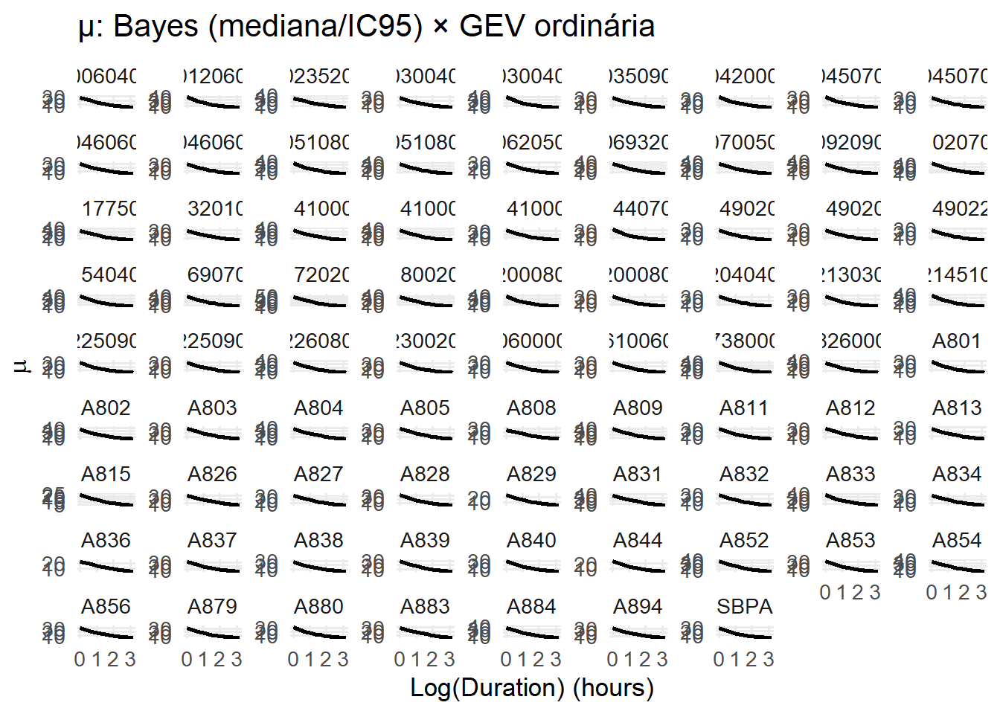
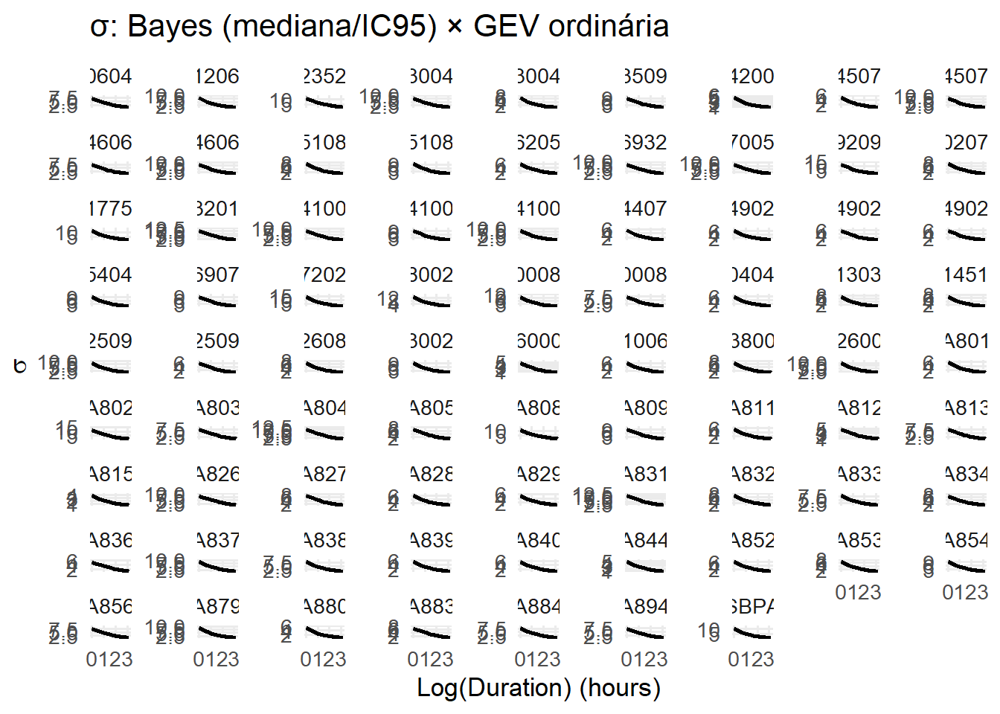
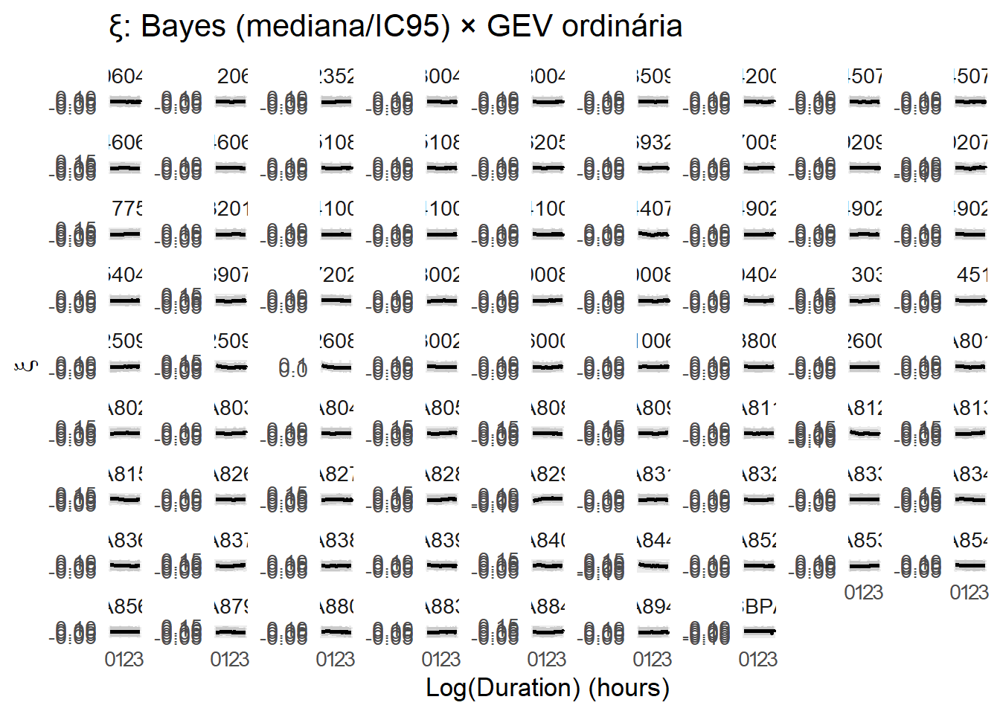
anos_por_estacao <- dados_modelo %>%
group_by(gauge_code) %>%
summarise(n_anos = n_distinct(year)) %>%
arrange(desc(n_anos)) %>%
rename(Estacao = gauge_code,
n_years = n_anos)
df_years <- anos_por_estacao %>%
mutate(
grupo = case_when(
n_years %in% c(18,15,14) ~ "Longas (18,15,14 anos)",
n_years %in% c(13) ~ "13 anos",
n_years %in% c(12) ~ "12 anos",
n_years %in% c(11) ~ "11 anos",
n_years %in% c(10) ~ "10 anos",
n_years %in% c(9) ~ "9 anos",
n_years %in% c(8) ~ "8 anos",
n_years %in% c(7) ~ "7 anos",
TRUE ~ "Outras"
)
)
df_mu_comb <- df_mu_comb %>% left_join(df_years, by = "Estacao")
df_sigma_comb <- df_sigma_comb %>% left_join(df_years, by = "Estacao")
df_xi_comb <- df_xi_comb %>% left_join(df_years, by = "Estacao")
# Usar o grupo para ver as estações de acordo com a duração
p_xi_longas <- plot_param(
df_xi_comb %>% filter(grupo == "Longas (18,15,14 anos)"),
"xi_gev",
expression(mu),
"μ – Estações com séries longas (18-14 anos)",
ncol = 5
)grupos_validos <- df_mu_comb %>%
distinct(grupo) %>%
pull(grupo)
plot_param_grupo <- function(df_comb, grupo_name) {
df_sub <- df_comb %>% filter(grupo == grupo_name)
plot_param(
df_sub,
"xi_gev", #mudar dependendo do plot
expression(mu),
paste0("μ – Estações com ", grupo_name),
ncol = 5
)
}
#plots_mu <- lapply(grupos_validos, function(g) plot_param_grupo(df_mu_comb, g))
#names(plots_mu) <- grupos_validos
plots_xi <- lapply(grupos_validos, function(g) plot_param_grupo(df_xi_comb, g))
names(plots_xi) <- grupos_validos
plots_xi[[5]]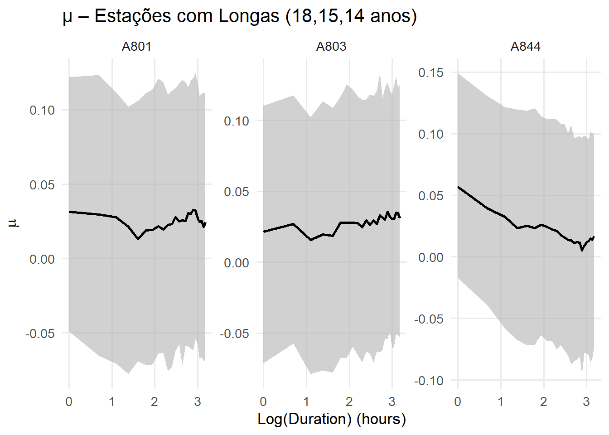
4.1 Posterior dos parâmetros por estação (H, θ e α)
Nesta seção analisamos a distribuição posterior dos parâmetros H, θ e α do modelo hierárquico. Esses parâmetros controlam, respectivamente:
- H: o expoente da relação intensidade–duração, determinando a inclinação das curvas IDF para cada estação;
- θ: o deslocamento da duração, que ajusta o comportamento da curva para durações curtas;
- α: o nível da curva de intensidade na duração de referência.
O objetivo desta análise é comparar o comportamento posterior desses parâmetros entre estações, levando em conta o comprimento da série de cada uma. Como diferentes estações possuem diferentes números de anos de dados (n_anos), agrupamos as estações conforme seu comprimento:
- Longas (18, 15, 14 anos)
- 13 anos
- 12 anos
- 11 anos
- 10 anos
- 9 anos
- 8 anos
- 7 anos
Geramos então os gráficos posteriores de H, θ e α para cada grupo, evitando misturar estações com volumes muito distintos de informação.
A estação SBPA apresenta um comportamento bem distinto das demais com o valor alto de H, e baixo alpha.
station_labels <- df_mu_comb %>%
distinct(estacao_id, Estacao) %>%
arrange(estacao_id) %>%
pull(Estacao)
library(dplyr)
library(tidyr)
library(stringr)
library(ggplot2)
library(patchwork)
library(posterior)
# --- função: extrai parâmetro do posterior_samples e devolve long -------------
# Espera posterior_samples[[param]] ser:
# - vetor (ndraw) -> vira ndraw x 1
# - matriz (ndraw x S) -> padrão de parâmetros por estação (ex.: H, theta, alpha)
extract_param_long_ps <- function(posterior_samples, param, value_name) {
x <- posterior_samples[[param]]
if (is.null(x)) stop("Parâmetro não encontrado em posterior_samples: ", param)
# garante matriz ndraw x ncol
if (is.null(dim(x))) {
x <- matrix(x, ncol = 1)
}
ndraw <- nrow(x)
# transforma em tibble com nomes tipo H[1], H[2], ...
df <- as_tibble(x)
colnames(df) <- paste0(param, "[", seq_len(ncol(x)), "]")
df %>%
mutate(.draw = row_number()) %>%
pivot_longer(-.draw, names_to = "name", values_to = value_name) %>%
mutate(station_id = as.integer(str_extract(name, "\\d+"))) %>%
select(.draw, station_id, !!value_name)
}
# --- extrair H, theta, alpha --------------------------------------------------
H_long <- extract_param_long_ps(posterior_samples, "H", "H")
theta_long <- extract_param_long_ps(posterior_samples, "theta", "theta")
alpha_long <- extract_param_long_ps(posterior_samples, "alpha", "alpha")
posterior_df <- H_long %>%
inner_join(theta_long, by = c(".draw", "station_id")) %>%
inner_join(alpha_long, by = c(".draw", "station_id")) %>%
mutate(station = factor(station_labels[station_id], levels = station_labels))
posterior_df <- posterior_df %>%
left_join(df_years %>% select(Estacao, grupo),
by = c("station" = "Estacao"))
# --- plots por grupo (igual ao seu) -------------------------------------------
plot_posterior_group <- function(posterior_df, grupo_name) {
df_sub <- posterior_df %>% filter(grupo == grupo_name)
if (nrow(df_sub) == 0) return(NULL)
p1 <- ggplot(df_sub, aes(x = H, color = station)) +
geom_density() +
labs(title = paste0("a) Posterior de H – ", grupo_name),
x = "H", y = "Densidade") +
theme_minimal() + theme(legend.position = "none")
p2 <- ggplot(df_sub, aes(x = theta, color = station)) +
geom_density() +
labs(title = paste0("b) Posterior de θ – ", grupo_name),
x = expression(theta), y = "Densidade") +
theme_minimal() + theme(legend.position = "none")
p3 <- ggplot(df_sub, aes(x = alpha, y = H, color = station)) +
geom_point(alpha = 0.4, size = 0.8) +
labs(title = paste0("c) Relação entre α e H – ", grupo_name),
x = expression(alpha), y = "H") +
theme_minimal() + theme(legend.position = "none")
p4 <- ggplot(df_sub, aes(x = H, y = theta, color = station)) +
geom_point(alpha = 0.4, size = 0.8) +
labs(title = paste0("d) Relação entre H e θ – ", grupo_name),
x = "H", y = expression(theta)) +
theme_minimal() + theme(legend.position = "bottom")
(p1 + p2) / (p3 + p4)
}
grupos_validos <- unique(posterior_df$grupo)
plots_posterior <- lapply(grupos_validos, function(g) {
plot_posterior_group(posterior_df, g)
})
names(plots_posterior) <- grupos_validos
plots_posterior[[7]]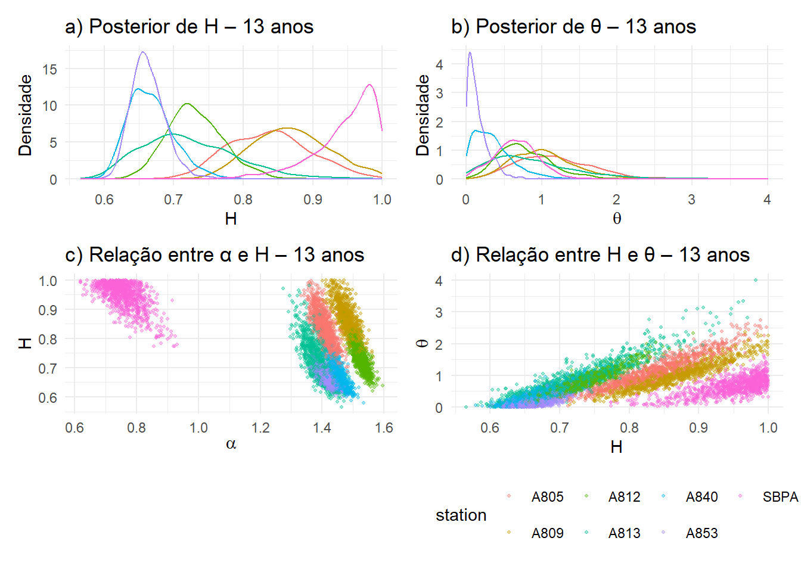
4.2 Mapas interpolados dos parâmetros H e θ com identificação das estações
Os parâmetros H e θ do modelo de escala intensidade–duração foram estimados para cada estação pluviométrica. Para visualizar sua variação espacial no estado do Rio Grande do Sul, realizamos uma interpolação espacial do tipo Inverse Distance Weighting (IDW) sobre uma grade regular, gerando campos contínuos de H e θ.
Além disso, incluímos no mapa o código de cada estação e o número de anos de dados disponíveis, de modo a facilitar a avaliação da confiabilidade local da estimativa.
library(dplyr)
library(tidyr)
library(sf)
library(geobr)
library(gstat)
library(ggplot2)
library(rstan)
library(purrr)
library(tibble)
x <- read_parquet("base/gerados/df_subdaily_info.parquet")
summary_from_draws <- function(mat, par_name) {
# mat: iterations x estacoes
stopifnot(is.matrix(mat))
stats <- apply(mat, 2, function(x) {
c(
mean = mean(x),
se_mean = sd(x) / sqrt(length(x)),
sd = sd(x),
`2.5%` = quantile(x, 0.025),
`25%` = quantile(x, 0.25),
`50%` = quantile(x, 0.50),
`75%` = quantile(x, 0.75),
`97.5%` = quantile(x, 0.975)
)
})
stats %>%
t() %>%
as.data.frame() %>%
rownames_to_column("idx") %>%
mutate(
par_raw = paste0(par_name, "[", idx, "]")
) %>%
select(par_raw, everything(), -idx)
}
s_par <- bind_rows(
summary_from_draws(posterior_samples$H, "H"),
summary_from_draws(posterior_samples$theta, "theta")
)
rownames(s_par) <- s_par$par_raw
s_par <- s_par %>% select(-par_raw)
colnames(s_par) <- c("mean", "se_mean", "sd", "2.5%", "25%", "50%", "75%", "97.5%")
s_par_df <- s_par %>%
as.data.frame() %>%
tibble::rownames_to_column("par_raw")
params_long <- s_par_df %>%
mutate(
# extrai nome do parâmetro antes do "["
par = sub("\\[.*$", "", par_raw),
# extrai conteúdo dentro dos colchetes
id_str = sub("^[^\\[]*\\[", "", par_raw), # tira tudo até o [
id_str = sub("\\]$", "", id_str), # remove o ]
estacao_id = as.integer(id_str)
) %>%
filter(par %in% c("H", "theta")) %>%
select(par, estacao_id, mean)
params_H_theta <- params_long %>%
filter(par %in% c("H", "theta")) %>%
select(par, estacao_id, mean) %>%
pivot_wider(
names_from = par,
values_from = mean
)
params_H_theta <- params_H_theta %>%
left_join(map_est, by = "estacao_id") %>%
rename(gauge_code = Estacao)
params_H_theta <- params_H_theta %>%
left_join(df_years %>% select(Estacao, n_years),
by = c("gauge_code" = "Estacao"))
stations_Htheta_sf <- x %>%
select(gauge_code, long, lat, elevation) %>%
distinct(gauge_code, .keep_all = TRUE) %>%
left_join(params_H_theta, by = "gauge_code") %>%
filter(!is.na(H), !is.na(theta)) %>%
st_as_sf(coords = c("long", "lat"), crs = 4326)
rs <- geobr::read_state(code_state = "RS", year = 2020) %>%
st_transform(4326)
grid_pol <- st_make_grid(rs, cellsize = 0.1, what = "polygons")
grid_sf <- st_sf(geometry = grid_pol) %>% st_intersection(rs)
interpolar_campo <- function(pts_sf, grid_sf, var_name) {
form <- as.formula(paste(var_name, "~ 1"))
g <- gstat::gstat(formula = form, data = pts_sf,
nmax = 10, set = list(idp = 2.0))
predict(g, newdata = grid_sf)
}
H_grid <- interpolar_campo(stations_Htheta_sf, grid_sf, "H") %>% mutate(param = "H")[inverse distance weighted interpolation]theta_grid <- interpolar_campo(stations_Htheta_sf, grid_sf, "theta") %>% mutate(param = "theta")[inverse distance weighted interpolation]p_H <- ggplot() +
geom_sf(data = rs, fill = NA, color = "black") +
geom_sf(data = H_grid, aes(fill = var1.pred), color = NA) +
geom_sf(data = stations_Htheta_sf,
color = "black", fill = "white", size = 1.6, shape = 21) +
geom_sf_text(data = stations_Htheta_sf,
aes(label = paste0(gauge_code, "\n(", n_years, " anos)")),
size = 2.1, nudge_y = 0.05) +
scale_fill_distiller(palette = "Greens", direction = 1) +
labs(
title = "Parâmetro H interpolado",
fill = "H"
) +
theme_minimal()
p_theta <- ggplot() +
geom_sf(data = rs, fill = NA, color = "black") +
geom_sf(data = theta_grid, aes(fill = var1.pred), color = NA) +
geom_sf(data = stations_Htheta_sf,
color = "black", fill = "white", size = 1.6, shape = 21) +
geom_sf_text(data = stations_Htheta_sf,
aes(label = paste0(gauge_code, "\n(", n_years, " anos)")),
size = 2.1, nudge_y = 0.05) +
scale_fill_distiller(palette = "Purples", direction = 1) +
labs(
title = "Parâmetro θ interpolado",
fill = expression(theta)
) +
theme_minimal()
p_H | p_theta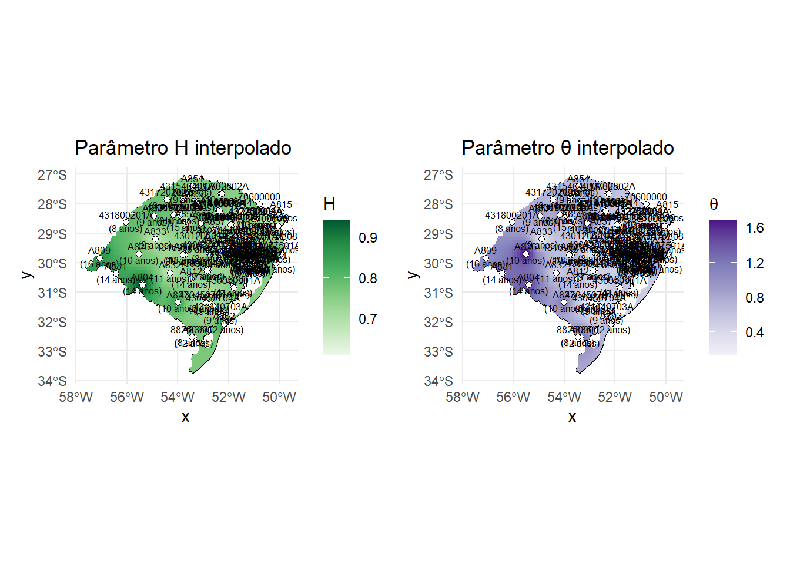
4.3 Plotagem dos parametros por intervalo
classificar_intervalos <- function(sf_obj, var, n_classes = 5) {
v <- sf_obj[[var]]
breaks <- seq(
from = min(v, na.rm = TRUE),
to = max(v, na.rm = TRUE),
length.out = n_classes + 1
)
sf_obj[[paste0(var, "_class")]] <- cut(
v,
breaks = breaks,
include.lowest = TRUE,
dig.lab = 3
)
sf_obj
}
H_grid <- H_grid %>% classificar_intervalos("var1.pred", n_classes = 4)
theta_grid <- theta_grid %>% classificar_intervalos("var1.pred", n_classes = 4)
p_H <- ggplot() +
geom_sf(data = rs, fill = NA, color = "black") +
geom_sf(
data = H_grid,
aes(fill = var1.pred_class),
color = NA
) +
geom_sf(
data = stations_Htheta_sf,
color = "black", fill = "white",
size = 1.6, shape = 21
) +
# geom_sf_text(
# data = stations_Htheta_sf,
# aes(label = paste0(gauge_code, "\n(", n_years, " anos)")),
# size = 2.1, nudge_y = 0.05
# ) +
scale_fill_brewer(
palette = "Greens",
name = "H (classes)"
) +
labs(title = "Parâmetro H interpolado (classes iguais)") +
theme_minimal()
p_theta <- ggplot() +
geom_sf(data = rs, fill = NA, color = "black") +
geom_sf(
data = theta_grid,
aes(fill = var1.pred_class),
color = NA
) +
geom_sf(
data = stations_Htheta_sf,
color = "black", fill = "white",
size = 1.6, shape = 21
) +
# geom_sf_text(
# data = stations_Htheta_sf,
# aes(label = paste0(gauge_code, "\n(", n_years, " anos)")),
# size = 2.1, nudge_y = 0.05
# ) +
scale_fill_brewer(
palette = "Purples",
name = expression(theta ~ "(classes)")
) +
labs(title = expression("Parâmetro " * theta * " interpolado (classes iguais)")) +
theme_minimal()
p_H | p_theta
4.4 Plot com parametros geomorfologicos
library(sf)
# geomorf_sf <- st_read(
# "C:/Users/laris/Downloads/OneDrive_2026-01-09/Macrozoneamento ambiental/Macrozonas ambientais.shp"
# )
# st_crs(geomorf_sf)
#
# geomorf_sf <- geomorf_sf %>%
# st_transform(4326)
#
# geomorf_sf_valid <- geomorf_sf %>%
# st_make_valid()
#
# geomorf_dissolved <- geomorf_sf_valid %>%
# group_by(Geomorfolo, Geomorfo) %>%
# summarise(
# geometry = st_union(geometry),
# .groups = "drop"
# )
#
# geomorf_sf <- geomorf_dissolved %>%
# select(Geomorfolo, Geomorfo, geometry)
#
# st_write(
# geomorf_sf,
# "base/fit_stan/geomorfologia.gpkg",
# layer = "geomorfologia",
# delete_layer = TRUE
# )
geomorf_sf <- st_read(
"base/fit_stan/geomorfologia.gpkg",
layer = "geomorfologia"
)Reading layer `geomorfologia' from data source
`C:\Users\laris\Documents\Git_ANA\Proj_ANA_UnB_comp1\base\fit_stan\geomorfologia.gpkg'
using driver `GPKG'
Simple feature collection with 5 features and 2 fields
Geometry type: MULTIPOLYGON
Dimension: XY
Bounding box: xmin: -57.64442 ymin: -33.75103 xmax: -49.6919 ymax: -27.08484
Geodetic CRS: WGS 84p_H_geo1 <- ggplot() +
geom_sf(data = rs, fill = NA, color = "black") +
geom_sf(
data = H_grid,
aes(fill = var1.pred_class),
color = NA
) +
geom_sf(
data = geomorf_sf,
fill = NA,
color = "black",
linewidth = 1,
linetype = "dashed"
) +
geom_sf(
data = stations_Htheta_sf,
color = "black", fill = "white",
size = 1.6, shape = 21
) +
# geom_sf_text(
# data = stations_Htheta_sf,
# aes(label = paste0(gauge_code, "\n(", n_years, " anos)")),
# size = 2.1, nudge_y = 0.05
# ) +
scale_fill_brewer(
palette = "Greens",
name = "H (classes)"
) +
labs(
title = "Parâmetro H interpolado",
subtitle = "Contornos de unidades geomorfológicas"
) +
theme_minimal()
stations_Htheta_sf %>%
st_join(geomorf_sf) %>%
group_by(Geomorfolo) %>%
summarise(
H_medio = mean(H, na.rm = TRUE),
n = n()
)Simple feature collection with 6 features and 3 fields
Geometry type: MULTIPOINT
Dimension: XY
Bounding box: xmin: -57.08194 ymin: -32.53472 xmax: -49.73333 ymax: -27.39556
Geodetic CRS: WGS 84
# A tibble: 6 × 4
Geomorfolo H_medio n geometry
<chr> <dbl> <int> <MULTIPOINT [°]>
1 "Cuesta do Haedo" 0.829 3 ((-57.08194 -29.84), (-55.52556 -29.7091…
2 "Depress\xe3o Central" 0.761 20 ((-55.40139 -30.75056), (-54.31091 -30.3…
3 "Escudo SRG" 0.721 6 ((-53.46694 -30.54528), (-52.89736 -31.3…
4 "Planalto" 0.736 37 ((-56.042 -28.632), (-51.51285 -28.22238…
5 "Plan\xedcie Costeira" 0.748 11 ((-53.37583 -32.53472), (-53.4558 -32.51…
6 <NA> 0.756 2 ((-50.7822 -28.02), (-49.93472 -28.27556…stations_Htheta_sf <- stations_Htheta_sf %>%
st_join(
H_grid %>% select(var1.pred_class),
join = st_nearest_feature
)
ggplot(stations_Htheta_sf %>% st_drop_geometry(),
aes(x = var1.pred_class, y = elevation)) +
geom_boxplot(fill = "grey85") +
geom_jitter(width = 0.15, alpha = 0.6) +
labs(
x = "Classe de H",
y = "Elevação (m)",
title = "Elevação por classe do parâmetro H"
) +
theme_minimal()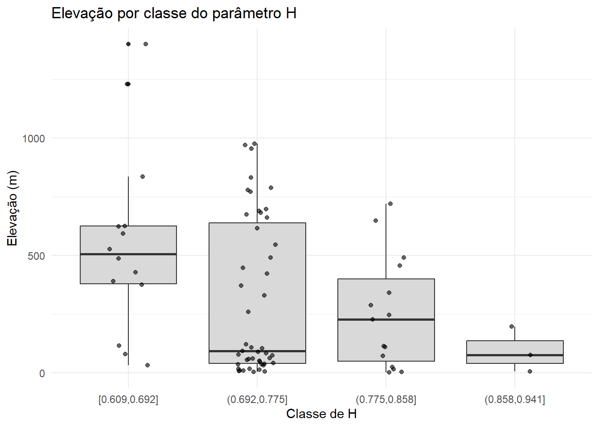
p_H_geo1 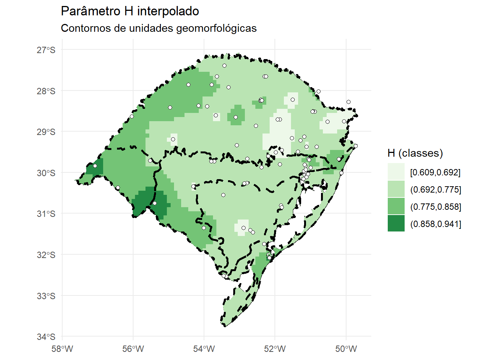
4.5 Plot com o MDE
library(elevatr)
rs_bbox <- st_bbox(rs)
mde <- get_elev_raster(
locations = rs,
z = 7,
clip = "locations"
)
mde <- terra::rast(mde)
mde <- terra::project(mde, "EPSG:4326")
names(mde) <- "elevation"
library(ggplot2)
library(tidyterra)
library(ggnewscale)
p_H_mde <- ggplot() +
geom_spatraster(data = mde, aes(fill = elevation)) +
scale_fill_viridis_c(
name = "Elevação (m)",
option = "C",
direction = -1
) +
ggnewscale::new_scale_fill() +
geom_sf(
data = H_grid,
aes(fill = var1.pred_class),
alpha = 0.35, # ↓ transparência maior
color = NA
) +
scale_fill_brewer(
palette = "Greens",
name = "H (classes)",
direction = 1
) +
## Limite
geom_sf(data = rs, fill = NA, color = "black", linewidth = 0.4) +
## Ajustes finos
theme_minimal() +
theme(
panel.grid = element_blank(),
legend.key.height = unit(0.6, "cm")
) +
labs(
title = "Elevação (MDE) e classes do parâmetro H",
subtitle = "MDE em destaque; classes de H como informação contextual"
)
plot(mde)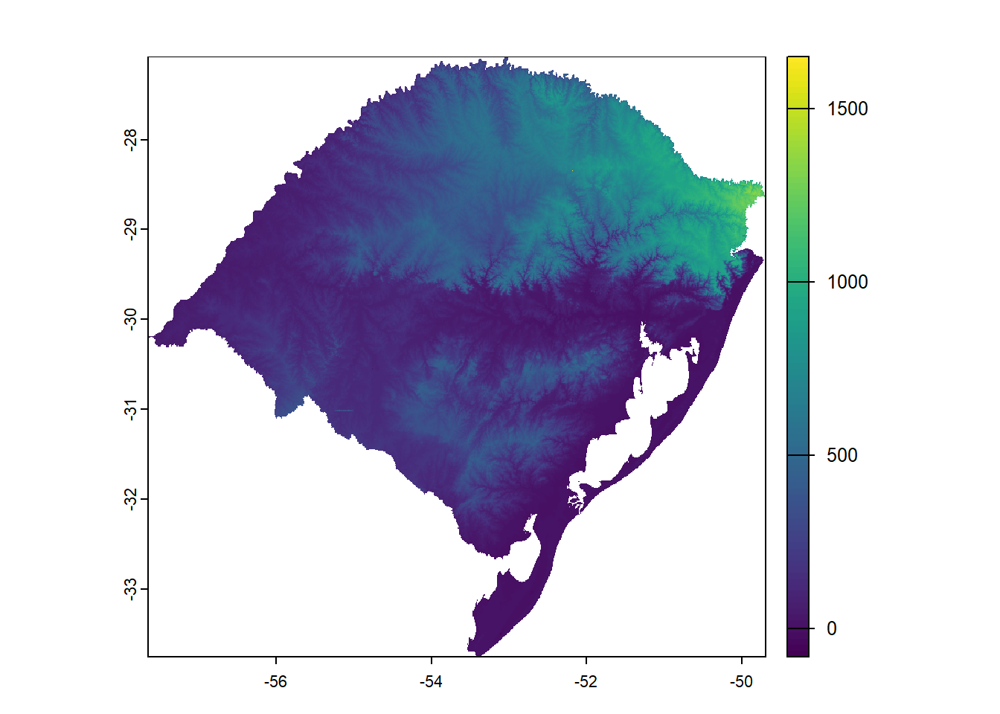
p_H_mde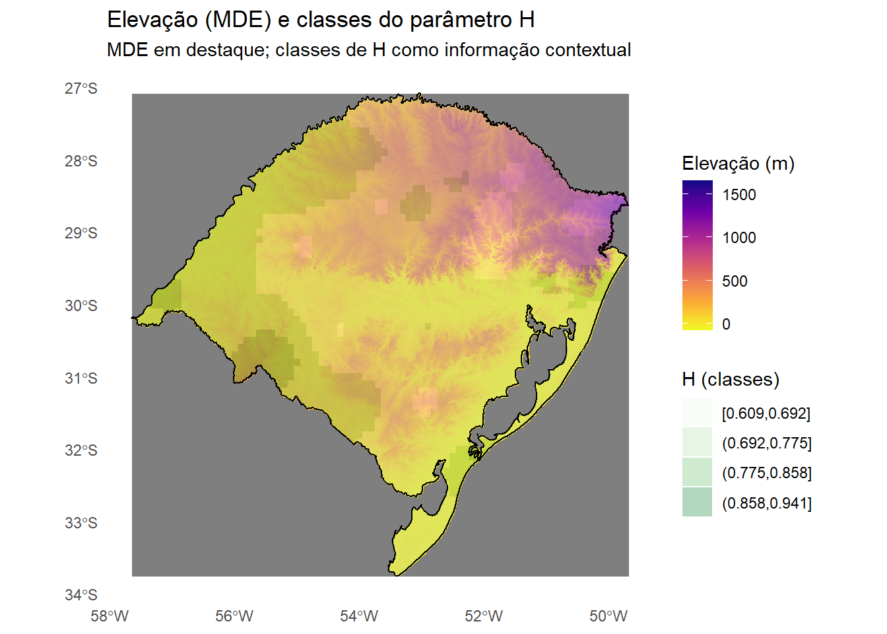